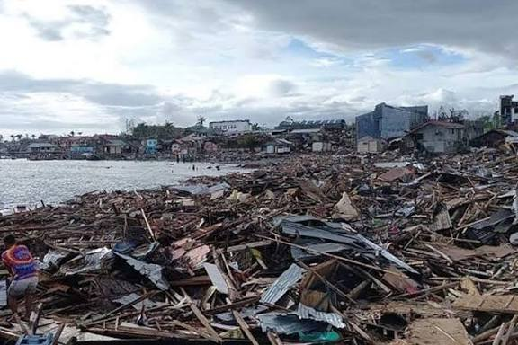

TYPHOON ODETTE

Story
TTyphoon Odette, internationally known as Typhoon Rai, was one of the strongest typhoons to hit the Philippines in December 2021. It entered the country on December 16, 2021, bringing powerful winds, heavy rainfall, and large waves. Several areas in the Visayas and Mindanao were severely affected. The typhoon damaged thousands of houses, buildings, schools, roads, and other important structures. Many trees and electric posts were knocked down by strong winds, causing widespread power interruptions. Some communities also lost access to clean water, communication services, and transportation. Many families were forced to leave their homes and stay in evacuation centers for safety. Farmers and fishermen lost their sources of income because crops, boats, and fishing equipment were damaged. Some people also lost their homes and important belongings. Typhoon Odette showed how dangerous strong typhoons can be, especially when communities are not fully prepared. It reminds everyone to follow weather updates, prepare emergency supplies, and evacuate when authorities advise them to do so.
Many families lost their homes and belongings. Roads, power lines, farms, and communication services were also damaged.
Consequences
Nationwide house damage:
- 1,497,214 houses damaged
- 362,809 houses totally destroyed
- 1,134,405 houses partially damaged
These are nationwide figures, not Cebu-only figures.
How Should We Prepare?
- Prepare food, water, medicine, flashlight, batteries, and important documents.
- Listen to weather updates.
- Secure roofs, windows, and loose objects.
- Know the nearest evacuation center.
- Evacuate early when authorities advise it.
Emergency Hotlines - Naga City, Cebu
National Emergency Hotline: 911
Naga City CDRRMO: 0916-316-4638 / 0908-413-7220
Fire Station: 0969-410-6706
Police: 0998-598-6338 / (032) 272-1166
Use your own area's official emergency numbers if your assigned location is different.
Sources: NDRRMC